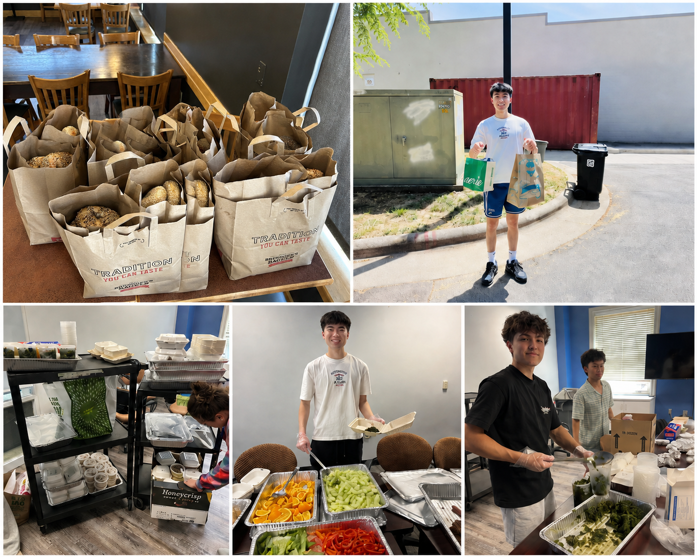

HOW IT WORKS
Five steps, start to finish.
Same day, temperature safe, and logged every time. So partners know they can count on it.
01
Spot the surplus.
Partner kitchens flag fresh, unserved food at the end of service. Meals, produce, and baked goods that are perfectly safe but won't get served or reused.
02
Recover, same day.
Our team collects it the same day it's made, keeping everything at a safe temperature from pickup to final handoff.
03
Sort and package.
Volunteers check, portion, and pack each recovery to food safety standards, labeling what's inside and when it was made.
04
Deliver where it's needed.
We hand off to vetted partners, shelters, pantries, and youth programs who know their community and get the food onto plates.
05
Log and repeat.
Every recovery gets recorded, so partners can rely on a steady, predictable flow of good food week after week.
IN THE FIELD
From our recoveries.

FeedForward
CLOSE